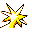

#145
Zapdos
Electric
A legendary bird Pokémon that is said to appear from clouds while dropping enormous lightning bolts
Base stats Total 490
HP90
Attack90
Defense85
Speed100
Special125
Details
- Species
- Electric
- Height
- 5'03"
- Weight
- 116.0 lb
- Catch rate
- 3
- Base exp
- 216
- Growth
- Slow
Level-up moves
LevelMoveType
StartThundershockElectric
StartDrill Peck
Lv 9Peck
Lv 10LeerNormal
Lv 16Thunder WaveElectric
Lv 36ThunderboltElectric
Lv 46ThunderElectric
Lv 49Sky Attack
Evolution
Does not evolve.
Where to find
Not found in the wild — evolve, trade or catch it elsewhere.
TM / HM
TM02 Razor WindTM06 ToxicTM09 Take DownTM10 Double-EdgeTM15 Hyper BeamTM24 ThunderboltTM25 ThunderTM31 MimicTM32 Double TeamTM33 ReflectTM34 BideTM39 SwiftTM43 Sky AttackTM44 RestTM45 Thunder WaveTM50 SubstituteHM02 FlyHM05 Flash